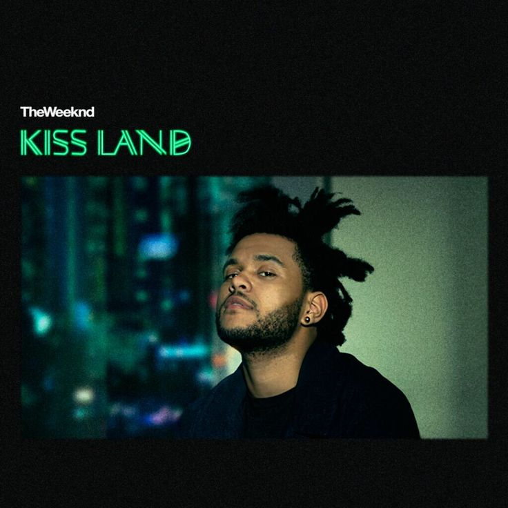

Kiss Land
September 10, 2013
10 Tracks
Kiss Land, the debut studio album by the Weeknd, was released on September 10, 2013, under XO and Republic Records. Produced primarily by DannyBoyStyles, the Weeknd, and DaHeala, among others, the album featured notable tracks like “Kiss Land,” “Belong to the World,” “Love in the Sky,” “Live For,” “Pretty,” and “Wanderlust.” Critics praised the album, and it debuted at number two on the US Billboard 200, selling 95,000 copies in its first week. By August 2015, it had sold 273,000 copies in the United States, establishing the Weeknd’s rising prominence in the music scene.